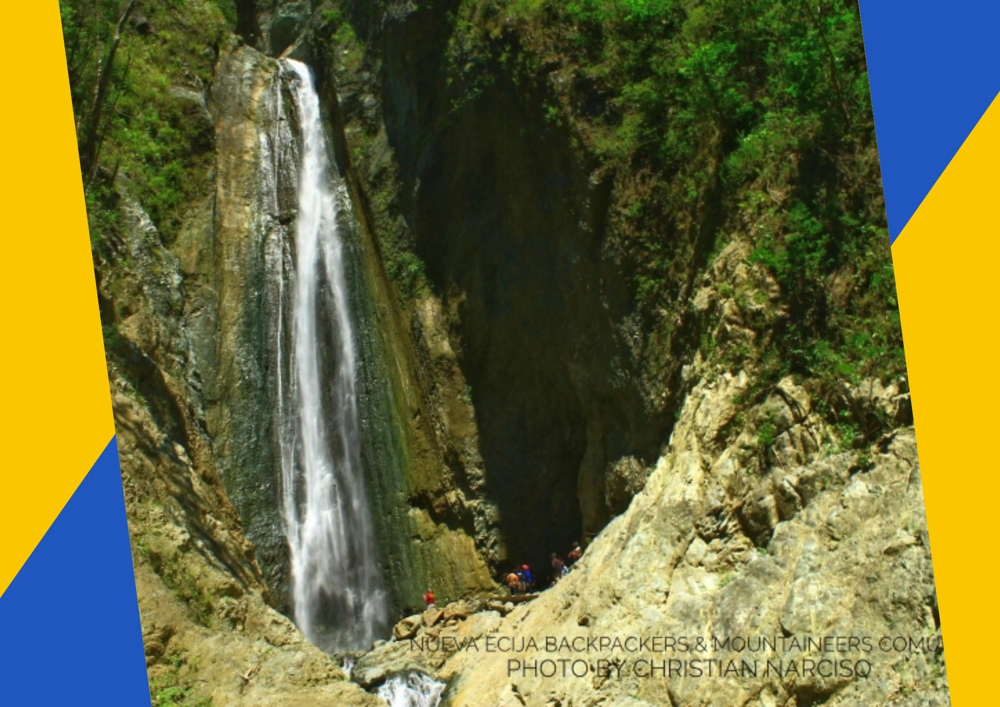
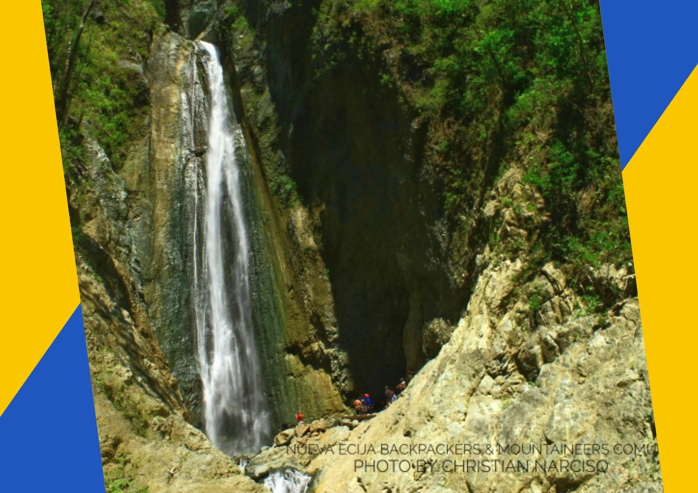

Where to go
Labi River
One of its most sought ecotourism attractions is the free-flowing Labi River located in Barangay Labi, Bongabon. For the more adventurous travelers, bikers, campers, and just plain nature lovers, the place offers more than just having fun at the riverside. There are several beautiful waterfalls in the park but one should be ready to hike and climb to enjoy them.
Mt. Dilalam
is a great destination for Eco-Tourism with its cool breeze and breathtaking sunset. It is one of the sources of water for irrigation for the local farmers of Calaanan Bongabon, Nueva Ecija.

Doña Aurora Memorial Park
is one of the historical lands in Bongabon, Nueva Ecija located in the Sierra Made Mountain range between the province of Aurora and Nueva Ecija under Aurora Memorial National Park located at the Boundary of Bongabon Nueva Ecija and Province of Aurora. Where Quezon Family stayed during their travel from Baler to Manila during American colonial period and near the place where the wife of the former President Manuel L. Quezon, Doña Aurora Aragon Quezon died in ambush by Hukbalahaps while heading to the Inauguration of Quezon Memorial hospital.
 

Silangan Falls and Deepsap Falls
Thirdly, Deesap Falls located in Barangay Labi, Bongabon, Nueva Ecija, Deesap Falls awaits the adventurer inside of you. It’s a four-kilometer hike, and if you keep a good pace, you should be able to get there in about two hours. But, before you embark on your journey to the breathtaking Deesap Falls, make sure you have appropriate trekking shoes for the rocky trail. The trek has series of river crossings, horizontal and vertical climbing. So it’s always important to put your safety first.